Сверточная нейронная сеть на базе ResNet для автоматической диагностики малярии
В данной статье я приведу простой пример того, как можно использовать методики глубокого обучения (а в частности, CNN и библиотеку Keras) для анализа изображений при автоматическом тестировании на малярию. Статья вдохновлена двумя работами - Evaluations of CNNs for Auto-Identification of Malaria Infected Bloodcells (Y. Dong и др) 2017 года и CNN-Based Analysis for Malaria Diagnostic (Z. Liang и др.) от конца 2016 (читайте через SciHub или посмотрите в приложенные мной PDF (Google Drive)). В работе 2017 года при классификации сравниваются три популярные на тот момент архитектуры нейронных сетей (LeNet, AlexNet and GoogLeNet) на их собственном закрытом датасете из около 3500 изображений эритроцитов. В работе же 2016 используется уже открытый датасет из более чем 27000 изображений и модифицированная архитектура AlexNet.
Хотя Y. Dong и удалось достичь точности около 98% на GoogLeNet, их набор данных значительно меньше. Поэтому, чтобы не сравнивать теплое с мягким, при сопоставлении я буду отталкиваться от работы Z. Liang с их точностью на AlexNet около 97%. Я попробую использовать при обучении более современную архитектуру ResNet, чтобы достичь более высокой точности модели при классификации клеток (вероятно при использовании какого-либо ансамбля архитектур, можно было бы добиться больших показателей, но это отрицательно скажется, как на скорости обучения, так и на конечном размере модели). Затем мы упакуем НС в мобильное приложение и протестируем ее производительность локально на смартфоне без подключения к сети.
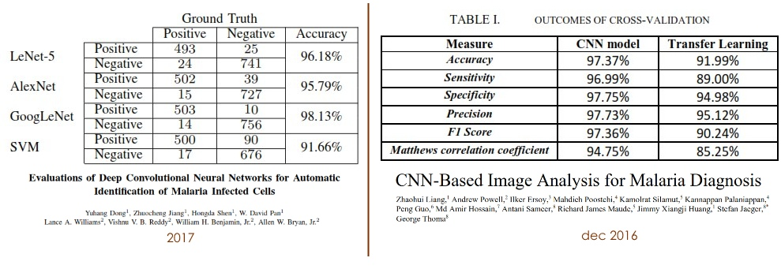
Показатели точности нейросетей Dong и Liang
Дабы не капитанствовать и не лить много воды, описывать этиологию и эпидемиологию малярии я не буду. Лишь скажу, что микроскопия толстого и тонкого мазков крови – самый распространенный метод ее диагностики, особенно в странах третьего мира (другие методики: определение антител к возбудителю малярии, определение белков возбудителя, ПЦР, экспресс-тесты и др.)
Также стоит отметить, что существуют современные микроскопические комплексы для автоматической диагностики малярии, например, Vision Hema® Malaria, в которых также используются методы машинного обучения. Но вышеуказанные работы и дальнейший техрепорт показывают, что можно уместить функционал на 400 строк кода на ладони, а не внедрять его в диагностический комбайн.
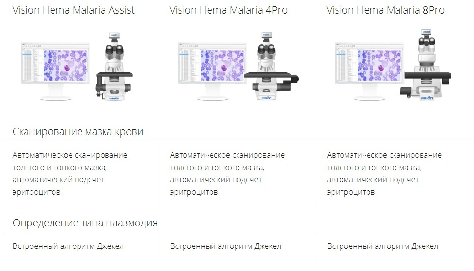
Итак, теперь определимся с целями. Я постараюсь:
- Обучить нейросеть c архитектурой ResNet на данных из работы Z. Liang определять пораженные клетки c сопоставимой (а лучше с более высокой) точностью.
- Подробно описать структуру проекта и сети.
- Упаковать НС в приложение и запустить не в облаке, а локально на устройстве (благо Keras позволяет это легко сделать).
- Добавить автоматическое распознавание клеток в поле зрения, осуществлять их подсчет и степень паразитемии (upd: на этом этапе мне стало лень).
Датасет
Датасет представлен снимками отдельных эритроцитов с тонких мазков крови в архиве cell_image.zip (Google Drive) от NIH School of Medicine University of Missouri, Columbia.
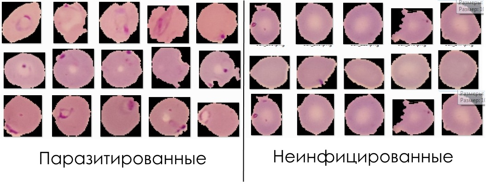Набор данных состоит из 27 588 изображений, распределенных специалистом по двум классам: Зараженные (Parasitized) и Незараженные (Uninfected) (по 13 794 файла в каждом).
В принципе, большинство изображений даже без специализированных знаний можно отнести к верному классу. Хотя, как можно видеть, в данных представлено и множество неоднозначных на первый взгляд образцов.
Требуемый софт
· Keras (высокоуровневый фреймворк для машинного обучения) - 1) pip install tensorflow; 2) pip install keras
· NumPy (библиотека для работы с многомерными массивами и высокоуровневыми математическими функциями) – pip install numpy
· Scikit-learn (библиотека для анализа данных на python) – pip install scikit
· Matplotlib (визуализация данных) - pip install matplotlib
Структура проекта
1) Создаем папку project
2) Копируем в нее copy_datasamples.py (скрипт для разметки данных) и training.py (скрипт для обучения классификатора)
3) Создаем в project папку dataset; распаковываем в нее cell_image.zip
Подготовка данных (copy_datasamples.py)
Открываем copy_datasamples.py
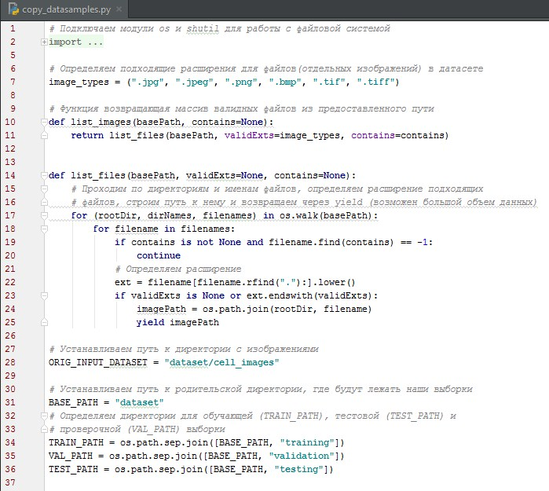Так как наш датасет еще не размечен, нам придется его разделить на Обучающую (по которой будет произведена настройка (оптимизация параметров) модели зависимости), Тестовую (по которой будет оценивается качество построенной модели) и Проверочную (по которой осуществляется выбор наилучшей модели из множества моделей, построенных по обучающей) выборки.
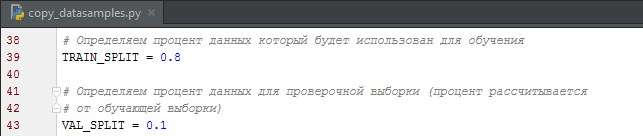Разделяем данные: Обучающие - 72%, тестовые – 20%, проверочные – 8% (Можно задать и другие значения, но это один из общепринятых вариантов).
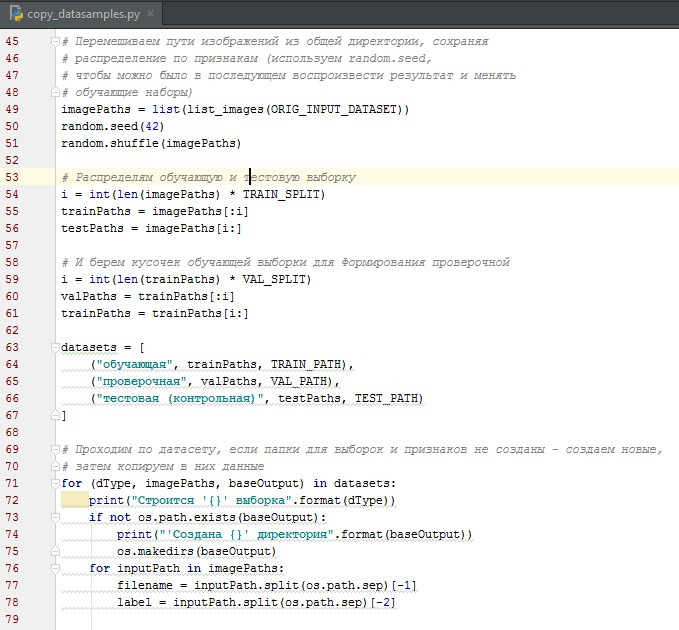Перемешиваем пути изображений из общей директории, сохраняя распределение по признакам, используем random.seed, чтобы можно было в последующем воспроизвести результат и менять обучающие наборы
(модуль random – это генератор псевдослучайных чисел, в котором стандартно для имплементации функции используется системное время, но если задать seed мы сможем
потом повторно воспроизвести результаты перемешивания).
Выполняем (жмем Run – Shift + F10) скрипт – и данные разместятся по папкам (Если папок нет, они создадутся).
Получим такую структуру данных:
Теперь можно приступать к обучению сети.
Описание архитектуры нейросети ResNet (training.py)
Краеугольным камнем ResNet является, предсказывающий отклонения весов от прошлых слоев, остаточный модуль, который был разработан подразделением Microsoft Research Asia. Он был использован на турнире по анализу изображений ImageNet в ансамбле из 6-ти ResNet сетей глубиной в 152 слоя и достиг top-5 ошибки всего в 3.57%. Подробнее можно почитать здесь (архитектура описана хоть и поверхностно, но вполне понятно), хотя для ТруДатаСайнсЭкспириенс лучше полистать оригинальную статью (Deep Residual Learning for Image Recognition - He, Zhang – Microsoft Research Asia).
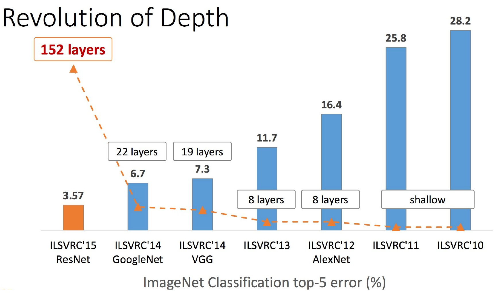Существует несколько вариантов архитектуры модуля, но наиболее эффективной и точной является архитектура с применением одновременно и пре-активации (т.е. RELU и BN помещается до CONV), и bottleneck. Ее мы и имплементируем.
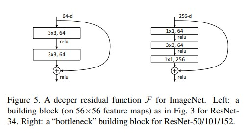Начинаем мы с импорта нашего, в принципе, стандартного набора классов и функций при сборке сверточной нейронной сети. Тем не менее, стоит обратить внимание на строку 28, где мы импортировали функцию add. Внутри остаточного модуля нам нужно будет сложить выходные данные от двух ветвей, тогда она нам и понадобится. Также в 29 строке мы импортируем функцию l2-регуляризации. L2-регуляризация чрезвычайно важна для коррекции весов в ResNet, так как из-за глубины сети она склонна к переобучению.
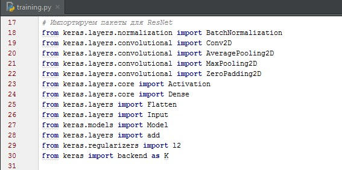Теперь переходим к нашему остаточному модулю (residual_module):

Конкретно эта ResNet была вдохновлена ее Caffe реализацией от самого Kayming He, а также mxnet реализацией от Вей Ву, поэтому мы будем как можно ближе следовать их выбору параметров. Рассмотрим параметры:
— data - это просто вход в остаточный модуль.
— Значение K определяет число фильтров, которые будут использоваться в конечном CONV в bottleneck. Первые два слоя CONV будут использовать K / 4 (согласно Kayming He).
— stride - шаг свертки.
— Затем у нас есть параметр chanDim, который определяет ось при выполнении batch нормализации – на это значение мы будем ссылаться позже в build функции в зависимости от того, как расположим цветовые каналы в изображении «с начала» или «с конца».
— Следующий параметр будет ответственен за уменьшение размеров нашего пространственного объема – логический параметр red (то есть, reduce - уменьшение) будет контролировать, уменьшаем ли мы пространственные измерения (True) или нет (False).
— Затем мы подаем силу регуляризации reg для всех CONV слоев. Параметр bnEps ответственен за избежание ошибок «деления на ноль» при нормализации входов (input normalization). В Керасе по умолчанию 0.001, однако для нашей конкретной реализации мы ее уменьшим. Как и BnMom, который контролирует импульс перемещения медианных значений - это значение обычно по умолчанию равно 0.99, но He и Вэй Ву рекомендуют уменьшить его значение до 0.9.
Теперь, когда параметры residual_module определены, давайте перейдем к телу:
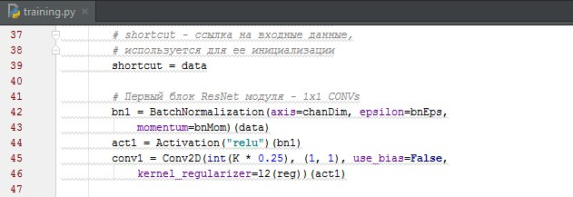В строке 39 мы инициализируем shortcut – он является просто ссылкой на входные данные. Позже мы добавим shortcut к выводу нашей ветви «bottleneck + пре-активация».
Первая ветка «пре-активация+bottleneck» показана в строках 42-46. Здесь мы применяем batch normalization за которой идет активация ReLU, а затем CONV 1*1, с использованием четверти К-фильтров. Также можно заметить, что мы исключаем смещения из наших CONV через use_bias = False. Зачем нам намеренно его отключать? По мнению Kayming He, смещения уже находятся в слоях BN, которые непосредственно следуют за свертками, поэтому нет необходимости вводить второе смещение.
Далее у нас идет второй слой CONV в bottleneck (3*3):
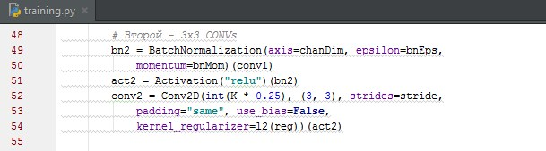Последний блок (1*1) использует целое К:
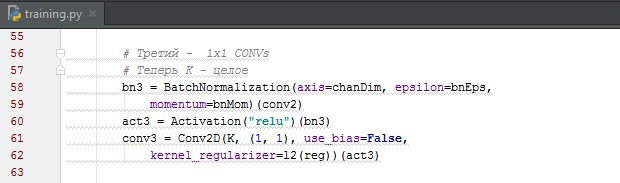Следующий шаг - посмотреть, нужно ли нам уменьшать пространственные размеры. Если придется, мы сделаем это с помощью сверточного слоя со stride > 1 и K=1.
Вывод окончательного conv3 в bottleneck складывается вместе с shortcut через add. Он и будет возвращен из residual_module:
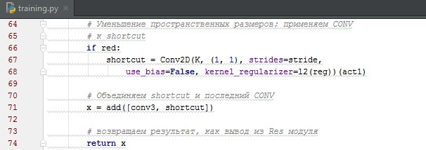Наконец, residual_module описан – он будет служить нашим строительным блоком при создании глубокой сети внутри метода сборки (build):
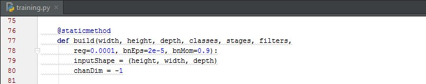Так же, как и residual_module наша функция сборки требует довольно много параметров для настройки. Но их я опишу на конкретных цифрах, когда мы будем билдить нашу сеть.
Далее, меняем наши inputShape и chanDim (чтобы избежать ошибок из-за форматирования изображений (размеров, порядка значений в цветовых каналах)) в зависимости от того, используем мы «channels last» или «channels first»:
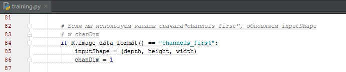Теперь мы можем определить вход в нашу ResNet:

В отличие от других архитектур нейронных сетей, где первый уровень обычно это CONV, мы видим, что ResNet использует BN в качестве первого уровня. Batch Normalization для входа - это дополнительный уровень нормализации. Выполнение BN на самом входе иногда помогает устранить необходимость применения Mean Normalization ко входам.
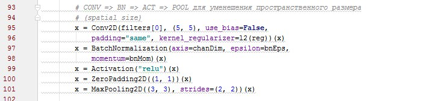В строке 106 мы проходим по массиву уровней. Имейте в виду, что каждая запись в нем представляет собой целочисленное значение, указывающее, сколько остаточных модулей будет сложено поверх каждого следующего. ResNet попытается уменьшить использование пула насколько это возможно, полагаясь на слои CONV, чтобы уменьшить пространственные размеры. Чтобы уменьшить размер тома без объединения слоев, мы должны установить шаг свертки на строке 107. Если это первый вход на уровне, мы установим шаг в (1, 1), указывая, что не следует выполнять понижающую выборку. Тем не менее, для каждого последующего этапа мы будем применять residual module с шагом (2, 2), что позволит нам уменьшить размер тома. Затем проходим по слоям в строке 112 с уже фиксированным шагом (1,1).
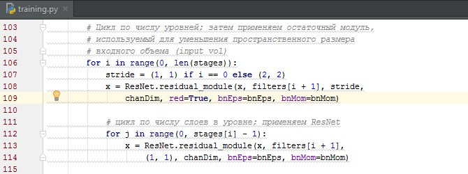Чтобы избежать использования плотных полностью связанных слоев, мы будем применять average pooling для уменьшения размера тома до 1 х 1 х classes:
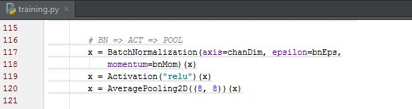Мы применяем Softmax Activation (подробно) для получения конечных вероятностей на выходе. Полностью построенная модель ResNet затем возвращается в вызывающую функцию в строке 113.
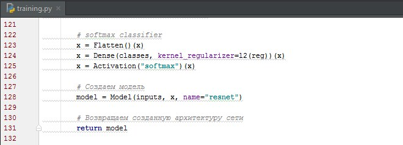Обучение сети (training.py)
Импортируем пакеты:
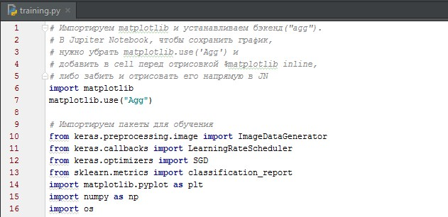Теперь давайте установим наши параметры обучения и определим нашу функцию снижения скорости обучения:
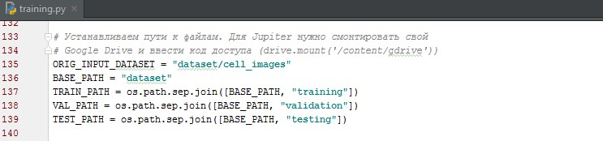В строках 143-145 мы определяем число эпох, начальную скорость обучения и размер пакета.
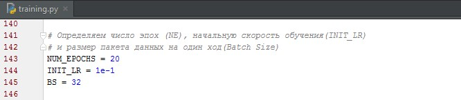Я обнаружил, что обучение с NUM_EPOCHS = 50 работает вполне неплохо (хотя думаю хватит и 20, прирост в точности на 50 не такой уж значительный). BS (размер пакета) = 32 подходит даже для обучения на ЦП, если достаточно терпения (на хорошей GPU можно поставить 64 или выше). Наш INIT_LR = 1e-1 (начальная скорость обучения) будет уменьшаться в соответствии с функцией poly_decay.
Наша функция poly_decay определена в строках 150-157. Эта функция поможет нам изменять learning rate после каждой эпохи. Мы устанавливаем мощность = 1,0, которая по сути превращает наш полиномиальный распад в линейный распад. Выходные данные мы отправим в последующем в callback - Learning Rate Scheduller.
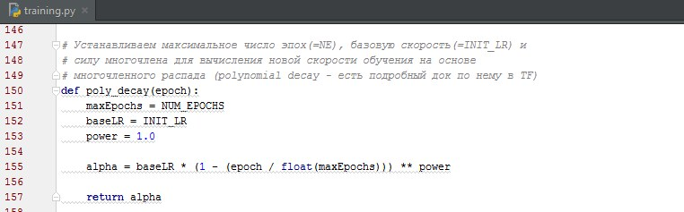Далее, давайте возьмем количество изображений в обучающих, проверочных и тестовых наборах, чтобы отобразить их в статистике и рассчитать число шагов в эпохе, используем код из copy_datasamples.py:
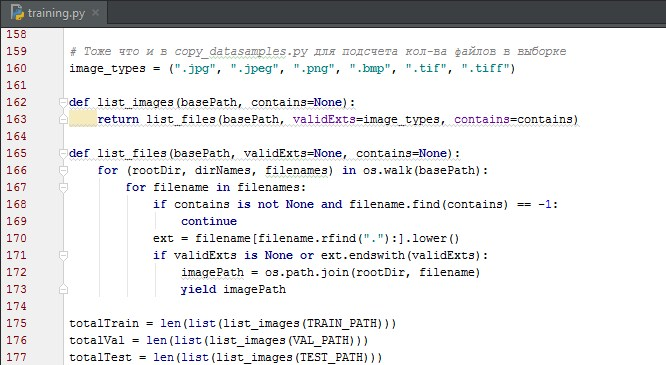Далее мы используем аугментацию данных:

Аугментация (дополнение, расширение) данных (Data Augmentation) включает в себя широкий спектр методов, используемых для создания новых обучающих образцов. По сути, мы применяем различные методы случайного незначительного трансформинга (трансляция, ротация и др.) изображений (без изменения метки класса данных) для повышения обобщающей способности модели. Учитывая, что наша сеть постоянно видит новые, слегка модифицированные версии входных данных, она способна генерить более надежные функции (на тестовые выборки эта методика не применяется). В большинстве случаев мы получим увеличение точности тестирования, хотя иногда и за счет небольшого падения точности обучения.
В следующем блоке мы создим Keras генераторы, используемые для загрузки изображений из входного каталога.
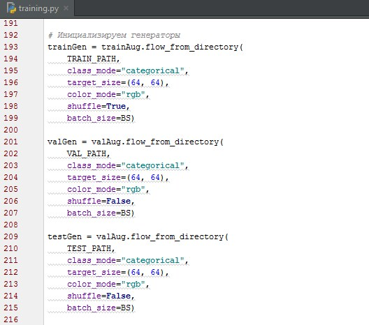Важно помнить, что функция flow_from_directory предполагает:
- Наличие базового входного каталога для данных.
- Внутри этого базового входного каталога есть N подкаталогов, где каждый подкаталог соответствует метке класса.
Снабжаем генераторы параметрами:
- class_mode - categorical
- Изменяем размер всех изображений до 64 х 64 пикселей.
- Устанавливаем цветовой канал (color_mode) "rgb".
- Перемешиваем пути изображений, но только для тренировочного генератора!
- Используем BS = 32.
Теперь устанавливаем ResNet и описываем модель (строка 219):
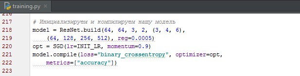- Изображения имеют размер 64 x 64 x 3 (3-канала RGB).
- Класса всего 2 (Инфицированные и неинфицированные).
- ResNet выполнит (3, 4, 6) укладку с (64, 128, 256, 512) CONV слоями, подразумевая, что:
= Первый слой CONV в ResNet, до уменьшения пространственных размеров, будет иметь всего 64 фильтра.
= Затем мы сложим 3 набора остаточных модулей. Три слоя CONV в каждом остаточном модуле получат 32, 32 и 128 фильтров CONV соответственно.
=Далее мы собираем 4 набора остаточных модулей, где каждый из трех уровней CONV будет иметь 64, 64 и 256 фильтров.
=Наконец, мы объединяем 6 наборов остаточных модулей, где каждый уровень CONV получает 128, 128 и 512 фильтров. Затем применяется SoftMax.
В строке 220 инициализируется оптимизатор SGD (Градиентный спуск) с начальным learning rate 1e-1 и momentum (почти тоже, что BnMom) 0,9.
В строках 221 и 222 мы используем в качестве функции потерь бинарную кроссэнтропию (binary_crossentropy), поскольку мы выполняем классификацию по 2 меткам. Для более чем двух классов я бы использовал categorycal_crossentropy.
На строке 225 мы задаем callback. Callback’и выполняются в конце каждой эпохи. Мы применяем наш poly_decay LearningRateScheduler для выгрузки статистики и изменения скорости обучения после каждой эпохи.
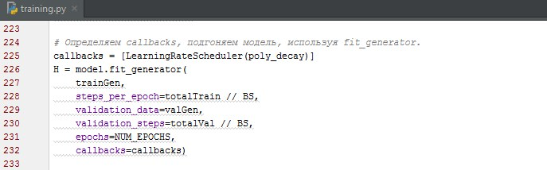Вызов model.fit_generator в строках 226-232 заставляет наш скрипт начать процесс обучения. Генератор trainGen автоматически (1) загрузит наши изображения с диска и (2) проанализирует метки классов. То же самое будет выполнять valGen, но только для проверочной выборки.
Теперь, когда эта модель обучена, мы можем оценить ее на тестовом наборе. Сбрасываем тестовый генератор перед оценкой, если этого не сделать, получим неверный отчет.
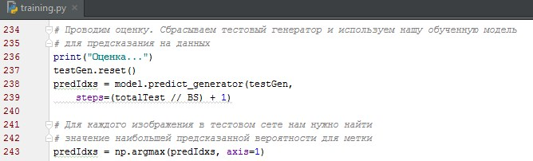Для оценки нашей модели мы сделаем прогнозы на тестовых данных и затем найдем метку с наибольшей вероятностью для каждого изображения в тестовой выборке (Строки 238-243).
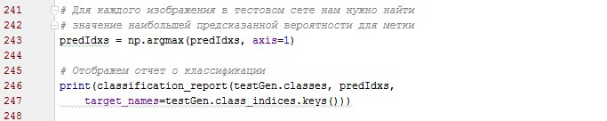Затем отображаем отчет о классификации (строки 245-247). И с помощью matplotlib отображаем наш график точности и ошибки по отношению к эпохам. Сохраняем модель.
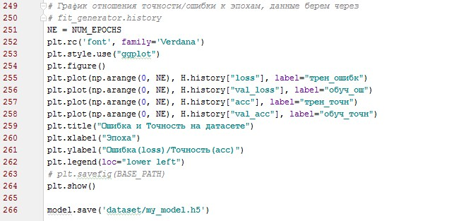Оценка результатов обучения
Давайте оценим результаты нашего обучения
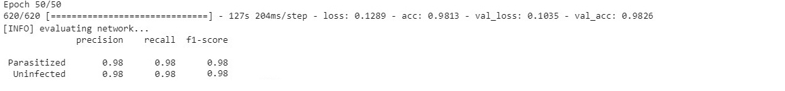 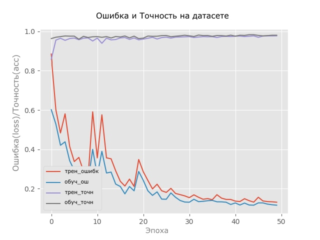На облачной GPU Tesla K80 процесс обучения занял чуть больше 2 часов. Мы добились точности 98.13% на тренировочной, 98.26% на обучающей и 98% на тестовой выборке (хех, это я еще с random.seed не баловался), а соотношения на графике указывают на валидность модели. В общем, мы перебили результат AlexNet и даже сравнялись с GoogLeNet на большей выборке (теплое с мягким). Объем конечной модели без квантования весов составил около 16 МБ и теперь мы упакуем его в приложение.
Далее почти не будет исходников, я лишь пролью свет на некоторые нюансы в сборке локальной модели, а затем приложу скрины и описание тестирования некоторых данных в приложении.
Мобильное приложение
Для создания локальной модели нужно использовать Google ML Kit for Firebase (документация), модель нужно сохранить сначала в формате pb через (session = K.get_session(); K.set_session(session)). Затем конвертировать в формат TFlite через два скрипта (freeze_graph --input_binary=false --input_graph=trained_model.pbtxt --output_node_names=result/Softmax --output_graph=freeze_model.pb --input_checkpoint=final_model.ckpt). А в build.gradle добавить запись aaptOptions { noCompress "tflite" }, чтобы отключить сжатие. Подробности в документации. Процесс создания apk можно опустить, так как к основной теме статьи он не относится.
В общем, в конце концов я апнул нашу модель в apk. Но добавлять автоматическое определение клеток и их подсчет мне было уже совсем скучно – задача возможно и нетривиальная (скорее муторная), но вполне решаемая с помощью OpenCV. Мне кажется, можно будет обойтись исключительно компьютерным зрением, без использования машинного обучения, хотя я бы и сюда его добавил:
Итак, так как автоматически наши изображения не кропаются, я нашел снимок поля зрения для анализа в интернете и ручками выделил в нем 50 клеток, из которых 45 нормальных и 5 зараженных (ИМХО конечно, я не уверен).
Вот такие результаты получились в приложении без подключения к интернету (удивительно, но обработалось все очень быстро, хотя у меня и довольно бюджетный девайс):
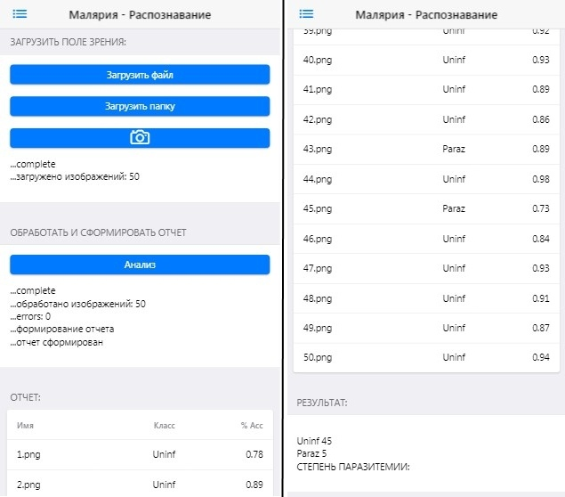Нейросеть успешно классифицировала все 50 изображений, и, по сути, сравнялась со мной в точности определения инфицированных клеток (не знаю хорошо это или плохо)), я даже кубический от призматического эпителия сейчас не отличу). Также пробовал закидывать данные из выборок и получал сопоставимые с 98% точностью ответы.
В итоге большая часть поставленных в начале целей достигнута. Подобные техники можно использовать для внедрения методик автоматической классификации практически в любой сфере лабораторной диагностики, при условии конечно достаточного объема грамотно собранных и размеченных обучающих данных.
Статьи, архив с датасетом и файлы приложу к публикации и на Google Drive (Скачать). Также позже добавлю в GDrive .ipynb файл и ссылку на Google Colab.